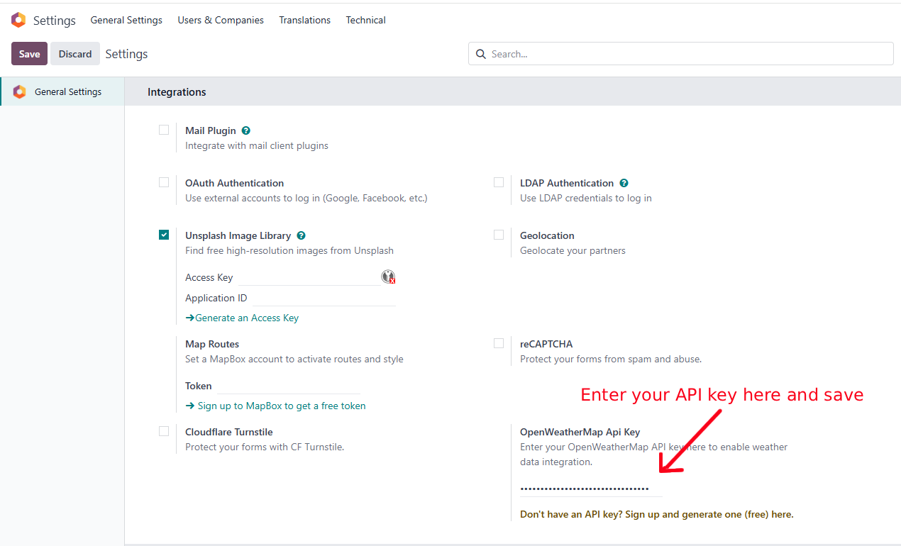
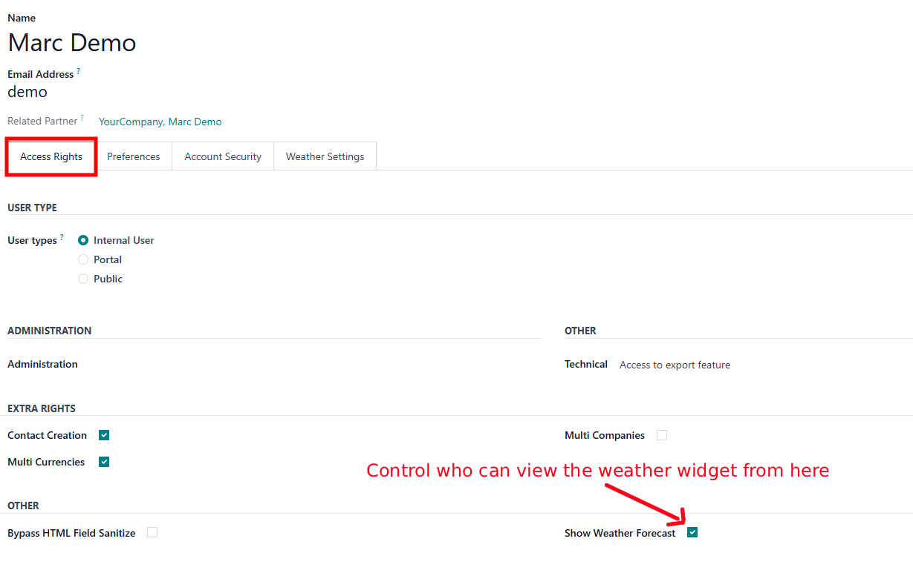
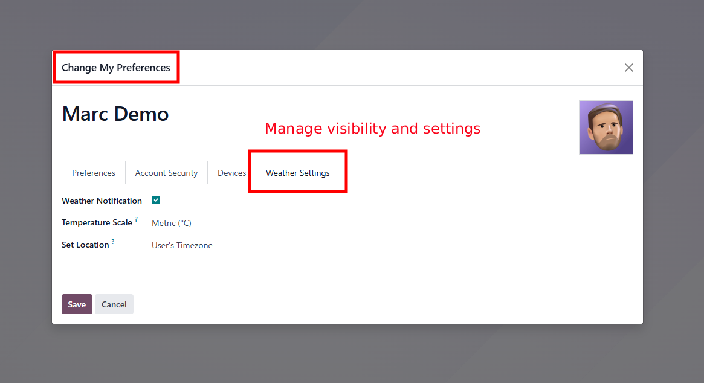
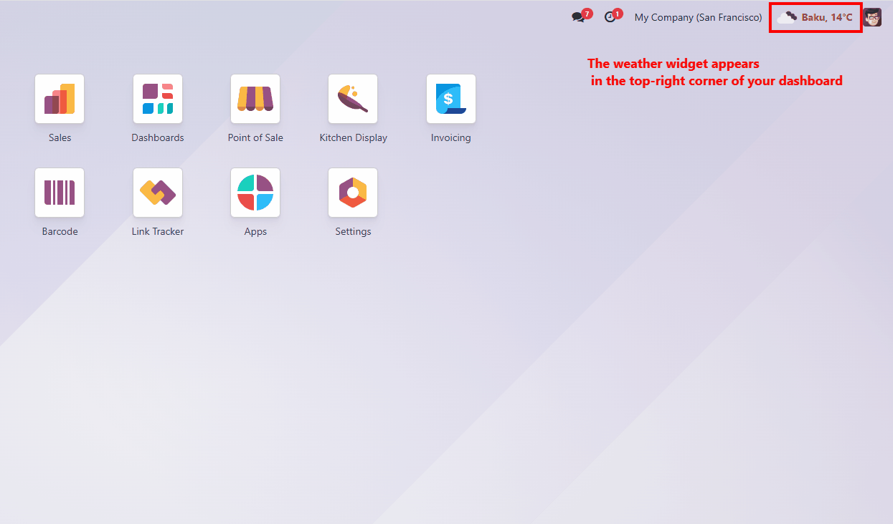

Simple weather overview inside Odoo
This module integrates Odoo with OpenWeatherMap (API v2.5) to display live weather details. The widget offers a quick glance at the current weather and refreshes automatically with live data.
What this module does for you
Live weather right in Odoo
Weather for your chosen location
Simple setup for administrators
Per-user weather display
Why you'll love this
Always up to date
Clean and minimal
Quick setup
Useful for any business
How it works
Step 1: Enter your API key
Go to Settings -> General Settings -> OpenWeatherMap API Key and paste your OpenWeatherMap API key (free plan works fine).

Step 2: Manage access permissions (Admins)
Control who can view the weather widget by adjusting access rights under Users -> Access Rights. Enable or disable the "Show Weather Forecast" option for each user as needed.

Step 3: Adjust your weather widget preferences
Each user can manage their own settings under Preferences -> Weather Settings.

Step 4: View the weather widget
The widget shows up in the top-right corner. Click to see more details.

Technical requirements
- Version: 18.0.1.8.0
- License: LGPL-3
- Depends on: Web
- Odoo version: 18.0
- API: OpenWeatherMap 2.5 (Free Plan)
Support
Built by ERPGO
erpgo.az ·
contact@erpgo.az
Need help with setup or want a custom version? Contact us anytime.